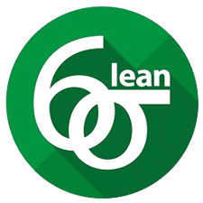

I'm Kash
a
About
I’m passionate about leveraging data analytics and machine learning to solve real-world business challenges, particularly in supply chain management. With a master’s degree in Business Analytics and a focus on Supply Chain Analytics at Arizona State University’s W.P. Carey School of Business, I’m honing my skills in data-driven decision-making, business process optimization, prescriptive modeling, risk mitigation, and statistical and visual analysis. With a strong foundation in Computer Science from my Bachelor of Technology degree and hands-on experience in the supply chain industry, I’m a dedicated and highly motivated professional driven to learn and grow, uncovering data-driven insights.
Business Analyst.
- Birthday: 07 June 1997
- City: Tempe, Arizona
- Phone: +1 (623) 280-6801
- Age: 27
- Degree: Master of Science
- Email: ksmehta6@asu.edu
When I'm not analyzing data, you can find me exploring the world of Formula One, Sitcoms, and Manga Comics.
Skills
I specialize in bridging advanced analytics and business strategy to tackle complex challenges across supply chain, risk mitigation, and operational efficiency. By leveraging data science, machine learning, scenario modeling, data visualization, and storytelling, I help organizations optimize inventory, distribution networks, and end-to-end processes. In leadership roles, I’ve led cross-functional teams, driven data-driven decisions, and transformed large-scale operations to achieve measurable cost savings, faster delivery, and resilient supply chains. My focus is on aligning business objectives with innovative analytical solutions that enable sustainable growth and competitive advantage.
Programming & Data Engineering
- Languages: Python, R, C++
- SQL: SparkSQL, BigQuery, PostgreSQL, NoSQL
- Relational Database Design, ETL Processes
Data Science & Machine Learning
- Scikit-learn, XGBoost, TensorFlow, PyTorch, Keras, MLlib
- Gurobi, OpenCV, YOLO, ART, matplotlib, seaborn, Spacy, BeautifulSoup
- Model training, predictive analytics, feature engineering
Cloud & Infrastructure
- Google Cloud, Microsoft Azure, Apache Spark, GitHub
- ERP: SAP, Blue Yonder, Llamasoft
Analytics & Visualization
- Microsoft Office, Excel (Power Query, VBA, Pivot Tables)
- Power BI, Tableau
- Minitab, SPSS, SAS
Optimization & Supply Chain
- Business Process Optimization, Linear & Integer Programming
- Scenario Modeling, Distribution Facility Design (Scale & Utilization)
- Greenfield & Brownfield (Responsiveness vs. Efficiency)
Advanced Statistical Methods
- A/B Testing, Sensitivity Analysis, Monte Carlo Simulation, @Risk
- Customer Lifetime Value, Net Present Value, Marketing Mix Modeling
- Bayesian Decision Trees
Resume
I’m delighted to present an overview of my professional journey, highlighting my expertise in data science, machine learning, and supply chain management.
Education
Master of Science - Business Analytics & Supply Chain
December 2024
W.P. Carey School of Business, Arizona State University, AZ
- GPA: 4.0/4.0
- Operations Planning & Execution, Logistics & Network Design, Strategic Procurement, Supply Chain Management
- Enterprise Analytics, Business Process Analytics, Data Mining, Analytical Decision Modeling, Quantitative Risk Management
Bachelor of Science - Computer Science & Engineering
November 2019
S.R.M Institute of Science & Technology, Chennai, India
- GPA: 3.65/4.0
- Statistics & Probability, Database Management, AI & Machine Learning, Deep Learning, Object Oriented Programming
Project Experience
Data Science Researcher
Dec, 2023 - Aug 2024
W.P. Carey School of Business, Arizona State University, AZ
- Co-authoring a research paper on supervised deep learning models using Explainable AI (XAI) for satellite imagery classification, detection and tracking
- Improved model reliability against adversarial attacks by 35% through advanced feature engineering and neuro-symbolic techniques
- Automated ETL pipelines to transform and preprocess 2TB+ satellite imagery data, reducing manual data-clearing time by 80%
- SQL, Python, PyTorch, TensorFlow, CVAT, LabelMe, YOLO, ART, OpenCV, Resnet, XGBoost, EfficientNet, Dotav2
Design of Experiments: Lego Race Car
- Optimized a Lego race car design with full factorial experiments and ANOVA, ranking #1 for distance traveled.
- Performed financial analysis and model adequacy checks to ensure robustness while achiving optimal blend of performance efficiency and cost-effectiveness.
- Leveraged Excel Solver, data tables, and Palisade suite tools (Precision Tree, @RISK) to maximize production efficiency and minimize costs.
Lean Six Sigma: Process Cycle Time Reduction
- Applied Lean Six Sigma (DMAIC) to map and analyze workflow charts, reducing average cycle time by 15% and boosting revenue by 20%.
- Conducted data analytics for trend identification and root cause analysis, presenting findings via Tableau dashboards.
- Developed recommendations to streamline delivery and enhance business processes, improving operational efficiency.
Certifications
Professional Experience
Supply Chain Planning, Capstone Project
August, 2024 - December, 2024
Teradyne Inc, Boston, MA
- Led a team of five to analyze inventory, demand forecasts, and slot planning data using SparkSQL and Tableau, identifying critical KPIs and building scenario modeling approaches for supply chain decisions.
- Adopted data storytelling to communicate actionable insights to senior stakeholders using interactive dashboard with Python and Streamlit, resulting in a 20% increase in forecast accuracy.
- Implemented Python scripts to automate outlier detection in slot planning, resolving 90% of delays caused by scheduling conflicts.
- Python, Tableau, PowerBI, SparkSQL, Streamlit, Statsmodel, Desirability Function, Scheduling, Inventory Planning, Demand Forecasting, Storytelling
AI in Supply Chain, Internship
May, 2024 - August, 2024
Avnet Inc, Phoenix, AZ
- Managed a cross-functional team to develop an AI-driven risk framework to quantify risks in semiconductor industry using predictive modeling, reducing response times to supply chain disruption by 60%.
- Leveraged statistical analysis to parameterize risk features, enabling agile and scalable risk modeling across 1B+ components.
- Utilized GitHub and JIRA for model version control, progress tracking, and agile workflow management ensuring alignment with stakeholders over key business decisions.
- Python, Excel, PowerBI, SparkSQL, Streamlit, Statsmodel, Desirability Function, Scikit-learn, HistGradiantBoosting, Regression, Git, Storytelling
Sustainability Solutions Analyst
January, 2024 - August, 2024
Rob and Melani Walton Sustainability Solutions, Tempe, AZ
- Developed 15 film plastic (#4) diversion programs across public, healthcare, retail, and industrial sectors, diverting 850 tons of waste and generating $250K in revenue through optimized rebate strategies.
- Designed scenario-based forecasting models on Excel to optimize financial, logistis and material collection routes, cutting operational costs by 20%.
- Led 60+ interviews and pilot assessments, identifying best practices, co-developing diversion strategies with key stakeholders.
- Excel modeling, VBA, Solver, Monte Carlo Simulation, Sensitivity Analysis, Financial Analysis, Network Design, Project Management, Leadership
Senior Analyst – Supply Chain Transformation
Apr, 2021 - May, 2023
PRT Bell Company, Chennai, India
- Spearheaded Odoo ERP implementation, integrating procurement, inventory, manufacturing, sales, and finance operations, boosting planning reliability and supply chain efficiency by 35%.
- Led an e-commerce digital transformation project, increasing sales by 325% and expanding the company’s market presence in India.
- Analyzed trends and patterns in transactional data using Python & SQL to improve demand forecasting, inventory and manufacturing planning, and spend analysis resulting in estimated cost savings of $1.25m.
- E-commerce portfolio management, Enterprise Resource Planning, Marketing Analytics, Python, SQL, Excel, Forecasting, Modeling, Inventory Management, P&L Analysis, Auditing, Project Management
Achievements
Throughout my academic and professional journey, I have consistently demonstrated a commitment to excellence and innovation. These accomplishments reflect my dedication to continuous learning, problem-solving, and leadership in the fields of business analytics and supply chain management.

Beta Gamma Sigma
An honor awarded to top-performing students in AACSB-accredited business programs. Being part of this esteemed society is a commitment to upholding the values of integrity, wisdom, and earnestness as I continue to grow in my professional career.

Lean Six Sigma - Green Belt
As a certified Lean Six Sigma Green Belt, I have gained expertise in process improvement and operational efficiency. This certification equips me with a strong foundation in data-driven methodologies, enabling me to analyze and optimize business processes, reduce waste, and improve quality.
Runner Up - Global Business Case Competition 2024
Competing against top talent from around the world, I applied advanced analytical and strategic thinking to address complex real-world business challenges. This achievement reflects my ability to collaborate effectively in diverse teams, think critically under pressure, and devise data-driven solutions to drive business success.
Projects
{kind=link}
Recommendations
People have nice things to say about me!
Contact
Location
Tempe, Arizona, USA (Open to Relocation)
Call
+1 (623) 280-6801
ksmehta0797@gmail.com